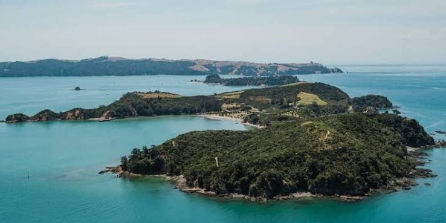

Nature Protection
Protecting New Zealand's native wildlife and nature trails.
Tiritiri Matangi is an important conservation island that protects many native and endangered birds.
Why is Tiritiri Matangi Important?
Tiritiri Matangi is a protected island sanctuary in the Hauraki Gulf. It is home to many native New Zealand birds, plants and other wildlife.
